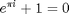

Contents
%%%%%%%%%%%%%%%%%%%%%%%%%%%%%%%%%%%%%%%%%%%%%%%%%%%%%%%%%%%%%%%%%%%%%%% % Program to find bi-directional response of shear type % % building base-isolated with pure-friction system % % % % Developed by % % Naseef Ummer, Doctoral Research Scholar, IIT Delhi % % Dr. Vasant A. Matsagar, Associate Professor, IIT Delhi % % % % Last Updated On: 29.01.2017 % % Approval Status: Pending | Validated but supervisor approval required % % % % Note: Pleasre refer for variable definitions towards the end of the code % %%%%%%%%%%%%%%%%%%%%%%%%%%%%%%%%%%%%%%%%%%%%%%%%%%%%%%%%%%%%%%%%%%%%%%% clear all clc tic

format short format compact
Constants
g = 9.8; %m/s2 rad=pi/180; % for converting degrees to radians
Checkboxes
G_f_k_adjust=1; %Change Line 26 accordingly (L_stiffness) G_f_c_adjust=1; %Change Line 27, 28 accordingly (L_damping ratios and G_f_damping)
Fixed Parameters Intialization
fk= 1; %Common factor for L_stiffness fm= 1; %Common factor for L_mass fdr=0.05; % Common factor for L_dampring_ratios L_mass = fm*[1 1 1 1 1]; % Enter in unit kg L_stiffness = fk*[1 1 1 1 1]; % Enter in unit N/m L_damping_ratios = fdr*[1 1 1 1 1]; %Specify if classical caughey damping matrix is to be constructed G_f_damping=[0]; %Specify explicity if required but ensure G_f_c_adjust=0 load 'Cent_acc_00.txt' %Ensure the data starts from "zero". load 'Cent_acc_90.txt' XG = Cent_acc_00./100; % '/100' used to converted cm/s2 to m/s2 YG = Cent_acc_90./100; % '/100' used to converted cm/s2 to m/s2 DTN = 0.02; % Time step in seconds NDIV = 50; % Number of intervals the specified time interval is divided NIT = 10; % Number of time gauss siedel method is applied to determine iterative solution for coupled equations NST= length(L_mass); % Number of storey N = 1; % Number of set of runs for different parameters to be executed for KN = 1:N
Superstructure Iterative Paramters Intialization
TX1 = 0.5;
RTYTX = 1.0;
Base Isolator Iterative Parameters Initialization
RMBM = 1;
TBX = 1;
TBY = 1;
ZETABX = 0.0;
ZETABY = 0.0;
BM = RMBM*L_mass(end);
AMU = 0.1;
Base Isolator Properties and Other Variables Calculations
WBX = 2*pi/TBX;
WBY = 2*pi/TBY;
TM = BM+sum(L_mass);
QX = 9.81*AMU*TM;
QY = QX;
CKABX = TM*WBX^2;;
CKABY = TM*WBY^2;
CDABX = 2*ZETABX*WBX*TM;
CDABY = 2*ZETABY*WBY*TM;
DT = DTN/NDIV;
TY1 = RTYTX*TX1;
NSTC = 2*NST;
NDOF = NST + 1;
NDOFC = NSTC + 2;
[MSSx, CSSx, KSSx, MSGx] = MCKSS(L_mass, L_damping_ratios, L_stiffness,G_f_k_adjust,TX1,G_f_c_adjust);
[MSSy, CSSy, KSSy, MSGy] = MCKSS(L_mass, L_damping_ratios, L_stiffness,G_f_k_adjust,TY1,G_f_c_adjust);
[MSS, CSS, KSS, MSG] = MCKXY(MSSx, CSSx, KSSx, MSGx, MSSy, CSSy, KSSy, MSGy);
[MSBx, CSBx, KSBx, MSBGx, CNx, KNx] = MCKSB(MSSx, CSSx, KSSx, BM, CDABX, CKABX, NST, NDOF);
[MSBy, CSBy, KSBy, MSBGy, CNy, KNy] = MCKSB(MSSy, CSSy, KSSy, BM, CDABY, CKABY, NST, NDOF);
[MSB, CSB, KSB, MSBG] = MCKXY(MSBx, CSBx, KSBx, MSBGx, MSBy, CSBy, KSBy, MSBGy)
MSB =
1 0 0 0 0 0 0 0 0 0 1 0
0 1 0 0 0 0 0 0 0 0 0 1
0 0 1 0 0 0 0 0 0 0 1 0
0 0 0 1 0 0 0 0 0 0 0 1
0 0 0 0 1 0 0 0 0 0 1 0
0 0 0 0 0 1 0 0 0 0 0 1
0 0 0 0 0 0 1 0 0 0 1 0
0 0 0 0 0 0 0 1 0 0 0 1
0 0 0 0 0 0 0 0 1 0 1 0
0 0 0 0 0 0 0 0 0 1 0 1
0 0 0 0 0 0 0 0 0 0 1 0
0 0 0 0 0 0 0 0 0 0 0 1
CSB =
Columns 1 through 7
3.7864 0 -2.2073 0 -0.4891 0 -0.1946
0 3.7864 0 -2.2073 0 -0.4891 0
-2.2073 0 5.5047 0 -1.9129 0 -0.3702
0 -2.2073 0 5.5047 0 -1.9129 0
-0.4891 0 -1.9129 0 5.6235 0 -1.8371
0 -0.4891 0 -1.9129 0 5.6235 0
-0.1946 0 -0.3702 0 -1.8371 0 5.6993
0 -0.1946 0 -0.3702 0 -1.8371 0
-0.0757 0 -0.1189 0 -0.2945 0 -1.7183
0 -0.0757 0 -0.1189 0 -0.2945 0
0 0 0 0 0 0 0
0 0 0 0 0 0 0
Columns 8 through 12
0 -0.0757 0 0 0
-0.1946 0 -0.0757 0 0
0 -0.1189 0 0 0
-0.3702 0 -0.1189 0 0
0 -0.2945 0 0 0
-1.8371 0 -0.2945 0 0
0 -1.7183 0 0 0
5.6993 0 -1.7183 0 0
0 5.9938 0 0 0
-1.7183 0 5.9938 0 0
0 -4.2755 0 4.2755 0
0 0 -4.2755 0 4.2755
KSB =
1.0e+03 *
Columns 1 through 7
1.9492 0 -1.9492 0 0 0 0
0 1.9492 0 -1.9492 0 0 0
-1.9492 0 3.8984 0 -1.9492 0 0
0 -1.9492 0 3.8984 0 -1.9492 0
0 0 -1.9492 0 3.8984 0 -1.9492
0 0 0 -1.9492 0 3.8984 0
0 0 0 0 -1.9492 0 3.8984
0 0 0 0 0 -1.9492 0
0 0 0 0 0 0 -1.9492
0 0 0 0 0 0 0
0 0 0 0 0 0 0
0 0 0 0 0 0 0
Columns 8 through 12
0 0 0 0 0
0 0 0 0 0
0 0 0 0 0
0 0 0 0 0
0 0 0 0 0
-1.9492 0 0 0 0
0 -1.9492 0 0 0
3.8984 0 -1.9492 0 0
0 3.8984 0 0 0
-1.9492 0 3.8984 0 0
0 -1.9492 0 2.1861 0
0 0 -1.9492 0 2.1861
MSBG =
1 0 0 0 0 0 0 0 0 0 0 0
0 1 0 0 0 0 0 0 0 0 0 0
0 0 1 0 0 0 0 0 0 0 0 0
0 0 0 1 0 0 0 0 0 0 0 0
0 0 0 0 1 0 0 0 0 0 0 0
0 0 0 0 0 1 0 0 0 0 0 0
0 0 0 0 0 0 1 0 0 0 0 0
0 0 0 0 0 0 0 1 0 0 0 0
0 0 0 0 0 0 0 0 1 0 0 0
0 0 0 0 0 0 0 0 0 1 0 0
0 0 0 0 0 0 0 0 0 0 1 0
0 0 0 0 0 0 0 0 0 0 0 1
end
ht = toc
avg_time_per_run = ht/N
ht =
0.3448
avg_time_per_run =
0.3448